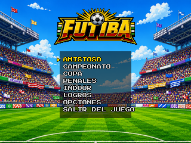
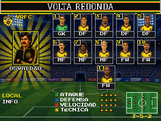
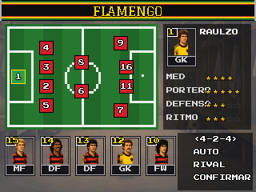
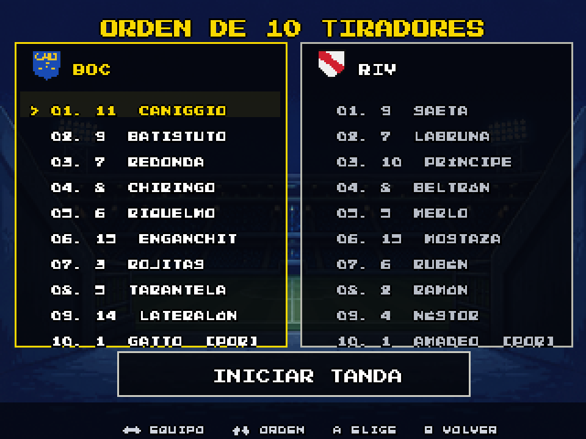
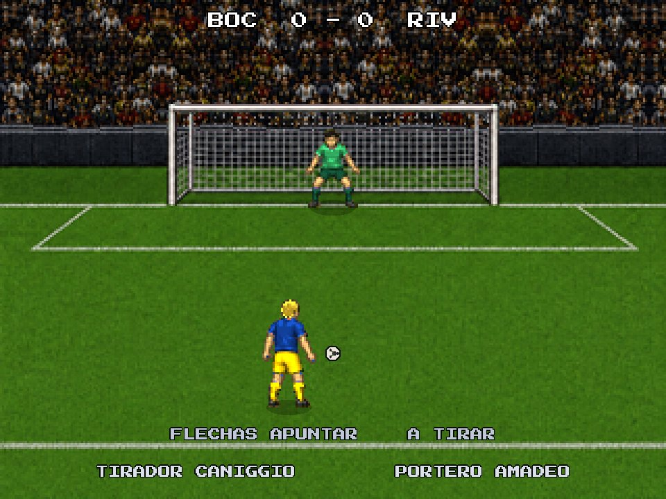
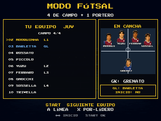
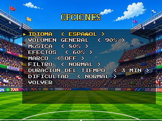

FÚTBOL A NUESTRA MANERA
AMISTOSO • CAMPEONATO • COPA • PENALES • FÚTSAL • PAREDÓN
PC (teclado y control) • Android (táctil y control) • referencia: build 52.9
RUEDA LA PELOTA.
FUTIBA es fútbol de videojuego a la antigua: pase rápido, barrida que pesa, arquero que decide. Menos botones, más lectura de juego: el mismo botón cambia de función con y sin la pelota.
Amistoso para ir directo al partido, Campeonato y Copa para campaña, Penales para duelo, Indoor para fútsal y paredón.
32 clubes, cada uno con plantel, atributos, formación y retrato de cada jugador.
Ajustá la alineación y el esquema. En fútsal y paredón, marcá quién juega de campo.
Leé la cancha, mové la pelota y elegí el momento del remate.

DEL MENÚ AL CÍRCULO CENTRAL.
El camino de un partido en la cancha. En cada pantalla, el juego muestra abajo los botones de ese momento.

←/→ cambian de club. Confirmá el local, después el visitante. ↓ lleva a INFO, con la historia del club.
Elegí a quién controlás (local, visitante o solo mirar), el estadio (12), la hora (día, tarde, noche) y el clima (sol o lluvia).

Confirmá un jugador y después otro para intercambiarlos, banco incluido. Abajo: formación, AUTO (el juego arma), RIVAL (ver al rival) y CONFIRMAR.

La cámara recorre la tribuna y baja a la cancha. START la saltea.

←/→ eligen cara o cruz; confirmar lanza la moneda.

Si ganaste: ↑ te quedás con la pelota; ← o → elige el campo. Si ganó el rival, ves su elección.
LO QUE HAY EN PANTALLA.

CONTINUAR, TÁCTICAS y SALIR DEL PARTIDO.
Formación y hasta 3 cambios. Se aplican en la próxima reanudación.
Pantalla de alineación para tocar el equipo. En el 2.º tiempo se cambian los lados.
El goleador festeja, el rival se lamenta, después viene la repetición. START la acorta.
Faltas, amarilla, roja y lesiones. Roja en tu equipo: volvés a la alineación para reorganizar.
Resumen con los goles. REVANCHA, NUEVOS EQUIPOS o SELECCIÓN DE MODO.
ELEGÍ LA PELEA.


FÚTSAL Y PAREDÓN.



TECLADO.
En el partido el jugador se mueve solo con las flechas. WASD funciona en los menús.
| TECLA | CON LA PELOTA | SIN LA PELOTA |
|---|---|---|
| ←↑↓→ | Moverse y dar dirección al pase, al centro y al remate | Moverse |
| Z | Pase (al compañero en esa dirección) | Quite de pie. Mantené para correr detrás de la pelota |
| X | Remate. Mantené para más fuerza (↑/↓ cambian la altura en el arco) | Pelota aérea (cabezazo, palomita) o cambiar de jugador |
| A | Centro o pelotazo. Mantené para más fuerza | Barrida |
| SHIFT | Mantené para correr. Un toque: gambeta (rulo o enganche). Dos toques rápidos: bicicleta de pies | Correr |
| ESPACIO | Lambretta (volantes y delanteros). Durante ella, X es chilena | — |
| PENTER | Pausa. ENTER también saltea la apertura y acorta la repetición | Pausa |
Fútsal: SHIFT + Z = pase en profundidad. Con SHIFT apretado, el pase siempre sale en profundidad.
Flechas o WASD navegan · Z o ENTER confirman · ESC o X vuelven · ←/→ cambian valores · L abre el álbum en logros.
CONTROL.
Nombres de botones estilo Xbox. En otros controles, usá el botón en la misma posición.
| BOTÓN | CON LA PELOTA | SIN LA PELOTA |
|---|---|---|
| D-PAD / ANALÓGICO | Moverse y dar dirección | Moverse |
| A | Pase | Quite de pie. Mantené para correr detrás de la pelota |
| X | Remate. Mantené para más fuerza | Pelota aérea o cambiar de jugador |
| Y | Centro o pelotazo. Mantené para más fuerza | Barrida |
| RB | Mantené para correr. Toque: gambeta. Dos toques: bicicleta de pies | Correr |
| LB + Y | Lambretta (volantes y delanteros). Durante ella, X es chilena | — |
| START | Pausa · saltea la apertura · acorta la repetición | Pausa |
Fútsal: LB + A = pase en profundidad.
En pelota parada vale la misma lógica del teclado: A pase corto, X remate, Y centro. B no hace nada en el partido: solo vuelve en los menús.
D-pad o analógico navegan · A confirma · B vuelve · LB abre el álbum en logros.
CONTROLES EN PANTALLA.
El juego queda en el medio, en 4:3. Los controles van en las franjas negras de los costados, sin tapar la cancha.
Cuando una pantalla te está esperando, el botón correcto tiene un anillo dorado que titila. En los menús es A (con la palabra OK). En el armado de fútsal y paredón es START. En el partido: START en la apertura y la repetición; A en el cara o cruz, la pausa y el final.
| BOTÓN | EN EL PARTIDO | EN LOS MENÚS |
|---|---|---|
| CRUCETA | Moverse (vale diagonal). Deslizá el dedo sin soltar | Navegar |
| A | Pase · sin la pelota, quite (mantené para correr detrás de la pelota) | Confirmar |
| B | Remate (mantené para más fuerza) · sin la pelota, pelota aérea o cambio | Volver |
| C | Centro (mantené para más fuerza) · sin la pelota, barrida | — |
| L1 | Mantené para correr · dos toques: bicicleta de pies · L1 + C lambretta · fútsal: L1 + A pase en profundidad | Álbum en logros |
| START | Pausa · saltea la apertura · acorta la repetición | Avanza en el armado de fútsal y paredón |
CON CONTROL.
La versión Android con control es para portátiles con botones físicos (R36S, Anbernic, Retroid…) o celular con control emparejado. No aparece nada en pantalla: el juego queda en 4:3 en el medio y los botones son los mismos del control en PC (página 8).

Ganá la Copa o el Campeonato y aparecen dos equipos escondidos. Y quien jugaba videojuegos en los 90 sabe: en la pantalla de apertura siempre hay un código.
12 logros liberan figuritas en el álbum de FUTIBA: primera victoria, remontada, goleada, triplete, gol en contra, jugar con uno menos…